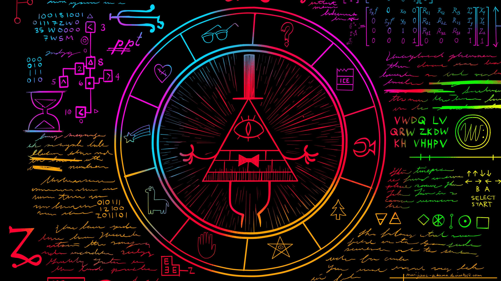

About Bill
inter-dimensional demon plotting to destroy Earth. This sadistic floating one-eyed sentient triangle with a top hat has a pair of mortal enemies and they’re… two twelve-year-old twins named Dipper and Mabel. When a portal opens from his dimension to ours, he turns the town of Gravity Falls into a nightmarish hellscape.

The great evil
Bill's Enemies
The Pines Family and everybody in Gravity Falls, who is against his plans to rule all of reality and existence.


1
2
3
1
2
3